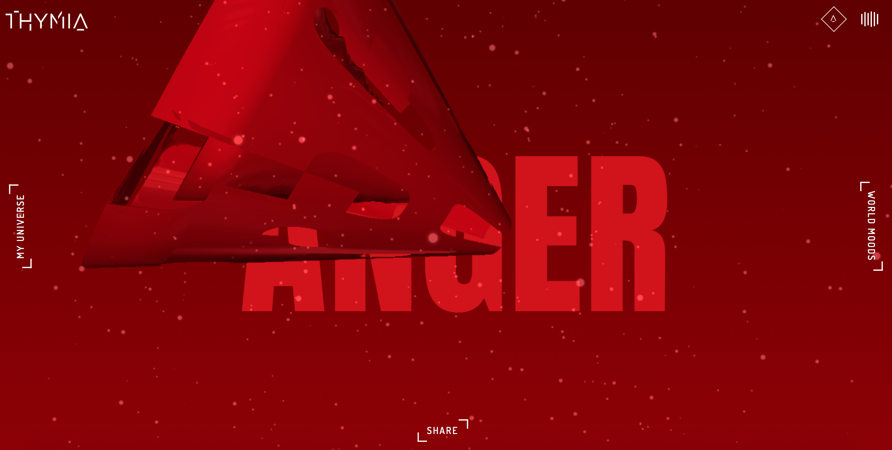

start exploring
ranking

This experience was designed by four french students from interactive design at Gobelins Paris. They create Thymia with the goal to find a graphic way to know, express and discover your daily mood. With thousands of possibilities, Thymia aims to be your new confident to share and express your emotions to the world. When you enter the site it asks you ten simple questions to guage how you are feeling that day. Once you answer the questions it generates an interactive background based on your mood. If you sign up for an account with either google or facebook it will create a personal timeline of all of your past moods. You can also explore other people's moods
Thymia is extremely well designed and aesthetically pleasing. The colors they use are all reflective of the different moods. Thymia also has a great interactive element. Your homepage which displays your mood allows you to interact with a floating symbol in the center of the page. Overall, the mood backgrounds are very mesmerizing. It was also really easy to create an account on the site. With two clicks it linked my google account and created a timeline of all my past moods. The website also gives you the option to share your mood on social media.
The word, Thymia, in the top left corner doesn't take you page to the homepage. Instead it starts the whole process of answering 10 questions again. This is misleading as whenever people see a website's name in a corner they usually think that this is the homepage button. Once the site has generated your mood, there isn't a lot of other purpose to it. I would reccommend more interactive elements. Such as suggestiong actions you could take based on your mood. For example, if you were stressed it could reccommend for you to take a walk or go for a massage to relax. The aim is for the website to be a confident and human-like, therefore it should have more reciprocal features.
Opening remarks and questions


The Different Moods

"Thymia" button takes you back to the start, and you have to answer the 10 questions again.

Page where you can explore other people's moods.